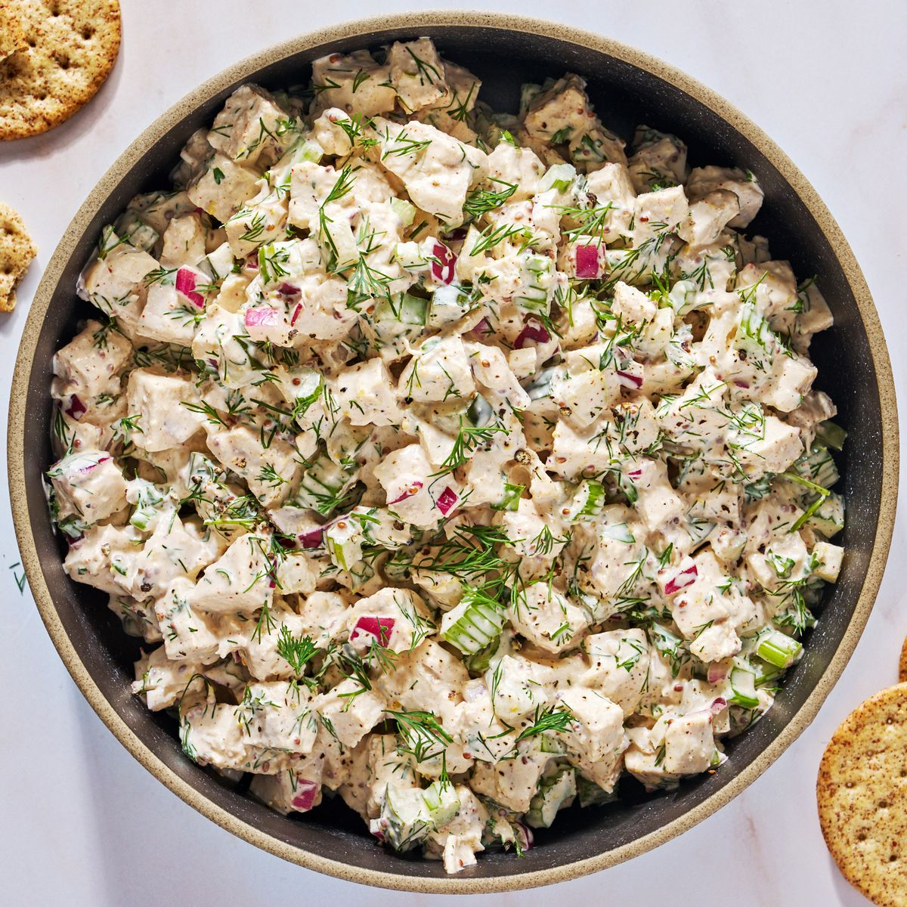

CHICKEN SALAD RECIPE

Description
Classic chicken salad is a delicious lunch and picnic staple that expertly combines well-seasoned chicken, a rich mayo dressing, plenty of fresh celery, and a touch of acid. It's then chilled until cold, giving the flavors time to meld and saturate the chicken, resulting in a refreshing, creamy, and super-satisfying snack.
INGREDIENTS
- 2 lb. boneless, skinless chicken breasts (3 to 4)
- 6 c. low-sodium chicken broth or water
- 2 tbsp. seasoned salt
- 1/3 c. full-fat Greek yogurt
- 2 tbsp. chopped fresh parsley
- 1 tbsp. plus 1 1/2 tsp. chopped fresh dill
- 1 tbsp. grainy or smooth Dijon mustard
- 1/2 tsp. finely grated lemon zest
- 2 tbsp. fresh lemon juice
- 2 stalks celery, chopped
- 1 small red onion, chopped
- 1/4 c. chopped dill pickles (about 2 spears)
- 3/4 tsp. freshly ground black pepper
METHOD
- In a large pot over medium-high heat, combine chicken, broth, and 1 tablespoon plus 1 1/2 teaspoons salt. Bring to a boil, then reduce heat to medium, cover pot, and cook until chicken is cooked through, about 10 minutes. Transfer chicken to a cutting board. Let rest 5 minutes
- Meanwhile, in a large bowl, stir yogurt, mayonnaise, parsley, dill, mustard, lemon zest, and lemon juice until smooth.
- Cut chicken into 1/4" cubes and add to yogurt mixture, tossing to coat. Add celery, onion, pickles, pepper, and remaining 1 1/2 teaspoons salt and mix until well combined.